Quotient rule 商法则
商法则的证明
问题引入:我们需要计算tanx
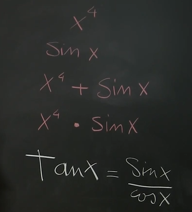
目标:计算商的微分,所有三角函数的导数,负次幂的导数
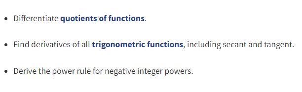
计算单位,假设f(t)单位是V,t单位是s,g(t)单位是m,我们可以知道h(t)=f(t)/g(t)单位自然是V/m,dh/dt那就是v/(m*s),(df/dt)/(dg/dt),df/dt是v/s,dg/dt是m/s,(v/s)/(m/s)得到结果v/m
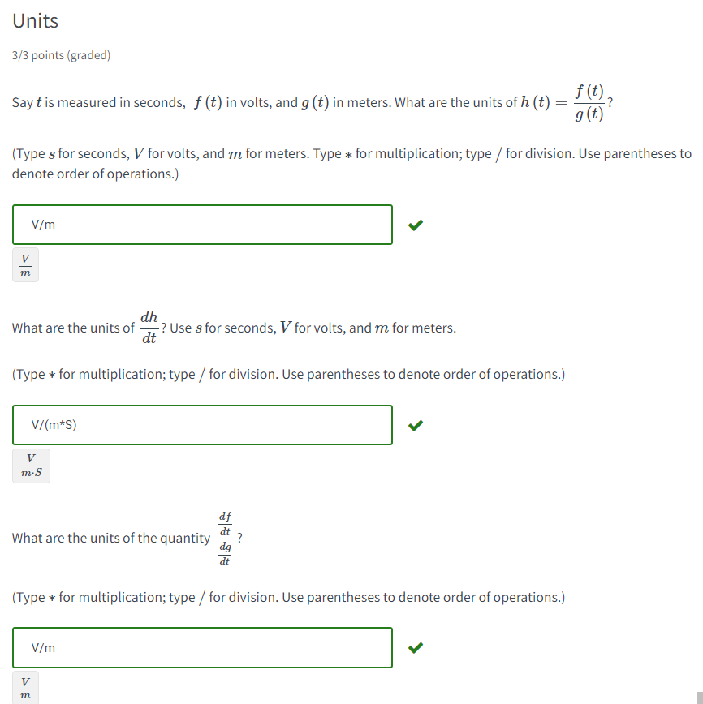
证明路径
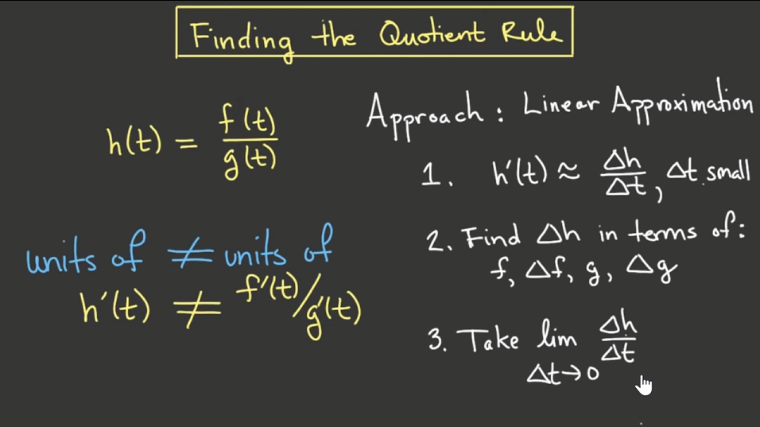
证明过程
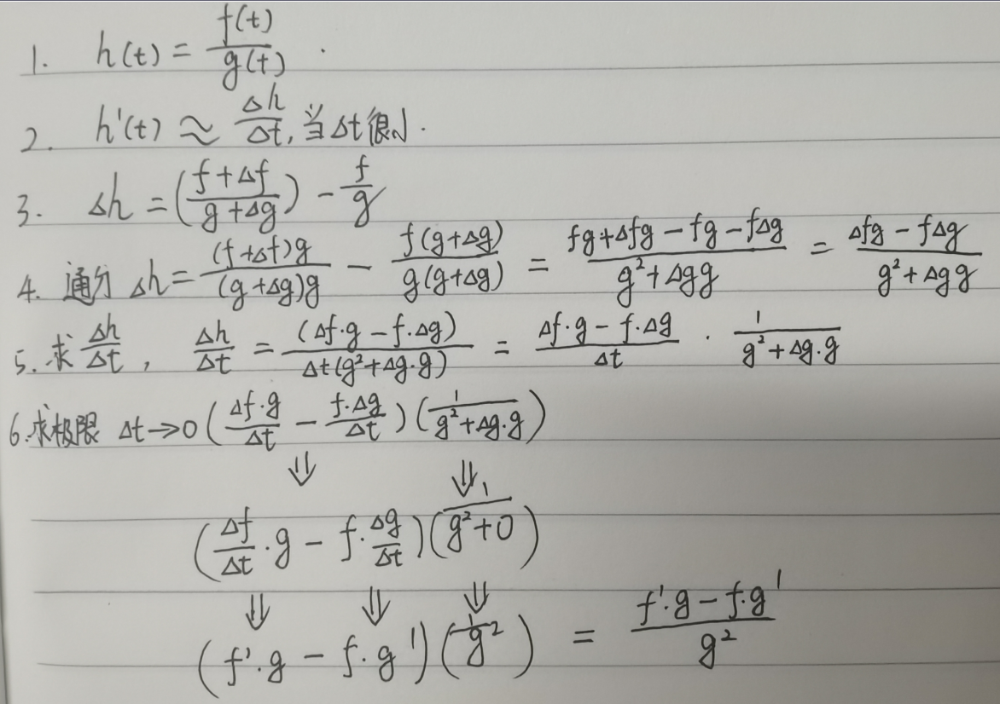
定义和示例
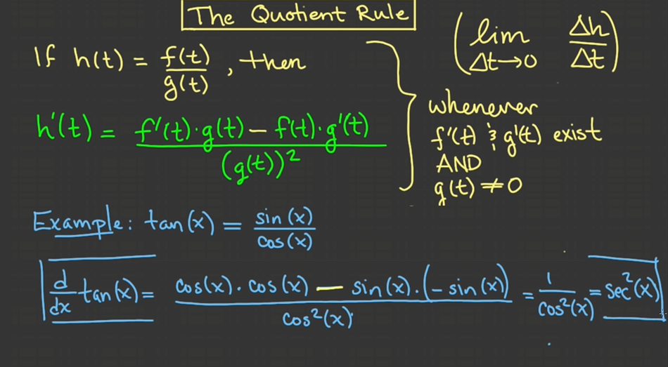
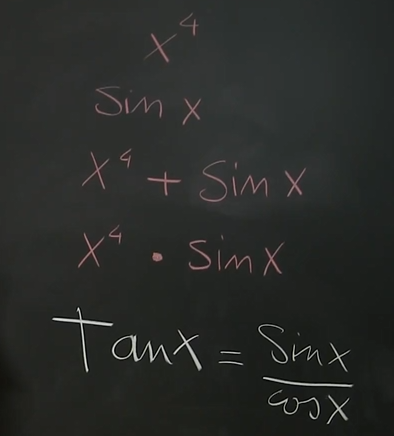
目标:计算商的微分,所有三角函数的导数,负次幂的导数
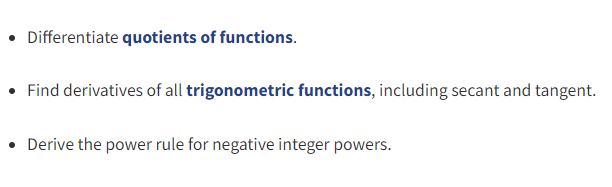
计算单位,假设f(t)单位是V,t单位是s,g(t)单位是m,我们可以知道h(t)=f(t)/g(t)单位自然是V/m,dh/dt那就是v/(m*s),(df/dt)/(dg/dt),df/dt是v/s,dg/dt是m/s,(v/s)/(m/s)得到结果v/m
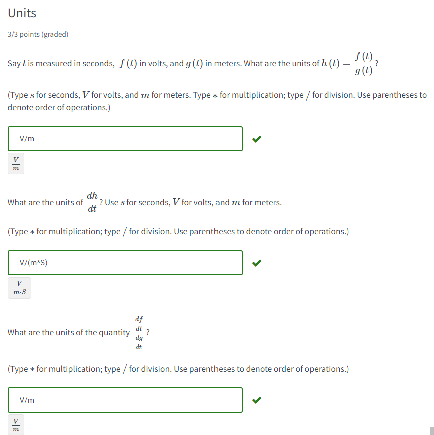
证明路径
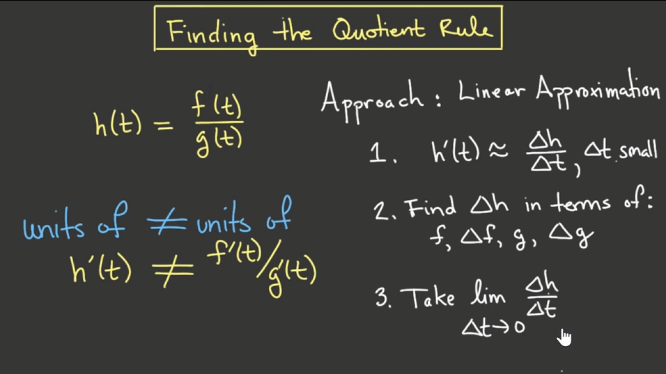
证明过程
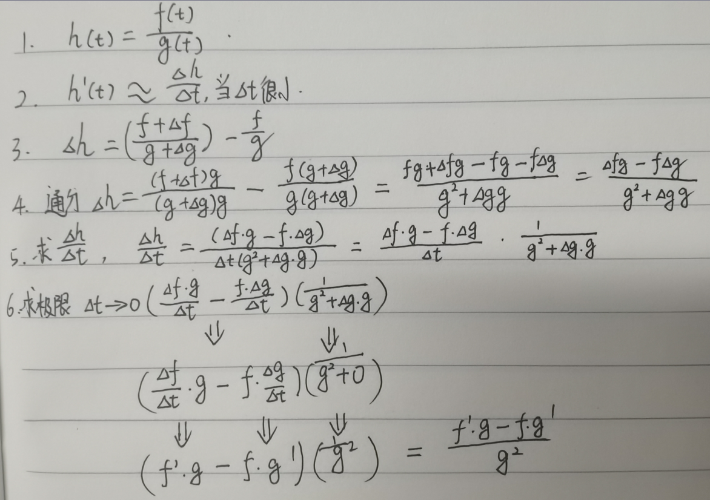
定义和示例
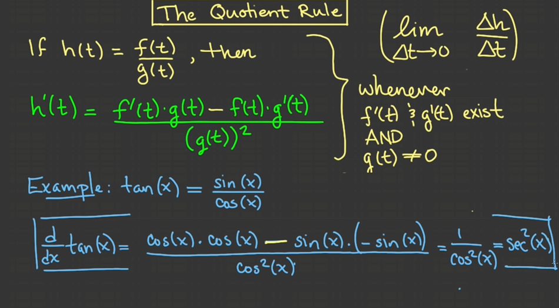